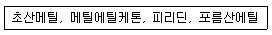
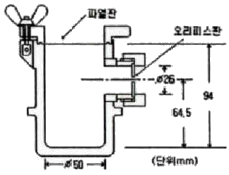
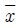
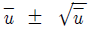
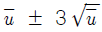
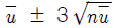
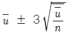

위험물기능장 (2010-03-28 기출문제)
1과목: 임의구분
1. C6H6 와 C6H5CH3 의 공통적인 특징을 설명한 것으로 틀린 것은?
- 무색의 투명한 액체로서 냄새가 있다.
- 물에는 잘 녹지 않으나 에테르에는 잘 녹는다.
- 증기는 마취성과 독성이 있다.
- 겨울에 대기 중의 찬 곳에서 고체가 된다.
(정답률: 89%)

2. 다음 중 아염소산은 어느 것인가?
- HClO
- HClO2
- HClO3
- HClO4
(정답률: 89%)
3. 다음 중 인화점이 가장 낮은 것은?
- 아세톤
- 벤젠
- 톨루엔
- 염화아세틸
(정답률: 79%)
4. 다음 위험물 중 혼재할 수 없는 위험물은? (단, 지정수량의 1/10 초과의 위험물이다.)
- 적린과 경유
- 칼륨과 등유
- 아세톤과 니트로셀룰로오스
- 과산화칼륨과 크실렌
(정답률: 89%)
5. 다음 중 위험물을 가압하는 설비에 설치하는 장치로서 옳지 않은 것은?
- 안전밸브를 병용하는 경보장치
- 압력계
- 수동적으로 압력상승을 정지시키는 장치
- 감압측에 안전밸브를 부착한 감압밸브
(정답률: 81%)
6. 소방공무원경력자가 취급할 수 있는 위험물은?
- 위험물안전관리법 시행령 별표1에 표기된 모든 위험물
- 제1류 위험물
- 제4류 위험물
- 제6류 위험물
(정답률: 92%)
7. 다음 중 과염소산칼륨과 접촉하였을 때의 위험성이 가장 낮은 물질은?
- 유황
- 알코올
- 알루미늄
- 물
(정답률: 83%)
8. 질산 2mol 은 몇 g 인가?
- 36g
- 72g
- 63g
- 126g
(정답률: 82%)
9. 제4류 위험물 제조소로 허가를 득하여 사용하는 도중에 변경허가를 득하지 않고 변경할 수 있는 것은?
- 배출설비를 신설하는 경우
- 위험물취급탱크의 방유제의 높이를 변경하는 경우
- 방화상 유효한 담을 신설하는 경우
- 지상에 250m의 위험물 배관을 신설하는 경우
(정답률: 78%)
10. 다음과 같은 소화난이도등급Ⅰ의 저장소에 물분무소화 설비를 설치하는 것이 위험물안전관리법에 의한 소화설비의 설치기준에 적합하지 않은 것은?
- 옥외탱크저장소(지상의 일반형태) - 지정수량의 120배의 유황만을 저장ㆍ취급하는 것
- 옥내탱크저장소 - 바닥면으로부터 탱크 옆판의 상단까지 높이가 8m인 탱크에 유황만을 저장ㆍ취급하는 것
- 암반탱크저장소 - 지정수량의 150배의 제2석유류 위험물을 저장ㆍ취급하는 것
- 해상탱크 - 지정수량의 110배인 경유를 저장ㆍ취급하는 것
(정답률: 56%)
11. 제조소등에서 위험물의 저장 기준에 관한 설명 중 틀린 것은?
- 옥내저장소에서 제4류 위험물 중 제3석유류, 제4석유류, 동식물유류를 수납하는 용기만을 겹쳐 쌓는 경우 4m를 초과하여 쌓지 아니하여야 한다.(기계에 의하여 하역하는 구조로 된 용기 외의 경우임)
- 옥외저장소에서 위험물을 수납한 용기를 선반에 저장하는 경우에는 6m를 초과하여 저장하지 아니하여야 한다.
- 이동저장탱크에는 당해 탱크에 저장 또는 취급하는 위험물의 유별, 품명, 지정수량, 대표적 성질을 표시하고 잘 보일 수 있도록 관리하여야 한다.
- 이동저장탱크에 알킬알루미늄등을 저장하는 경우에는 20kPa 이하의 압력으로 비활성의 기체를 봉입한다.
(정답률: 69%)
12. 과염소산과 과산화수소의 공통적인 위험성을 나타낸 것은?
- 가열하면 수소를 발생한다.
- 불연성이지만 독성이 있다.
- 물, 알코올에 희석하면 안전하다.
- 농도가 36wt% 미만인 것은 위험물에 해당하지 않는다고 법령에서 정하고 있다.
(정답률: 79%)
13. 50% 의 N2 와 50% Ar 으로 구성된 소화약제는?
- HFC-125
- IG-541
- HFC-23
- IG-55
(정답률: 91%)
14. 위험물안전관리법령상의 “자연발화성물질 및 금수성물질”에 해당하는 것은?
- 염소화규소화합물
- 금속의 아지화합물
- 황과 적린의 화합물
- 할로겐간화합물
(정답률: 72%)
15. 제5류 위험물인 피크린산의 질소 함유량은 약 몇 wt% 인가?
- 11.76
- 12.76
- 18.34
- 21.60
(정답률: 57%)
16. 위험물안전관리법령상 [보기]의 위험물에 공통적으로 해당하는 것은?

- 품명
- 수용성
- 지정수량
- 비수용성
(정답률: 78%)
17. 위험물제조소에 관한 다음 설명 중 옳은 것은? (단, 원칙적인 경우에 한한다.)
- 위험물 시설의 설치 후 사용 시기는 완공검사신청서를 제출했을 때부터 사용이 가능하다.
- 위험물 시설의 설치 후 사용 시기는 완공검사를 받은 날부터 사용이 가능하다.
- 위험물 시설의 설치 후 사용 시기는 설치허가를 받았을 때부터 사용이 가능하다.
- 위험물 시설의 설치 후 사용 시기는 완공검사를 받고 완공검사필증을 교부 받았을 때부터 사용이 가능하다.
(정답률: 92%)
18. 다음 중 과산화수소의 분해를 막기 위한 안정제는?
- MnO2
- HNO3
- HClO4
- H3PO4
(정답률: 86%)
19. 배관의 팽창 또는 수축으로 인한 관, 기구의 파손을 방지하기 위하여 관을 곡관으로 만들어 배관 도중에 설치하는 신축 이음재는?
- 슬리브형
- 벨로스형
- 루프형
- U형스트레이너
(정답률: 80%)
20. 사방황에 대한 설명으로 가장 거리가 먼 것은?
- 가열하면 단사황을 얻을 수 있다.
- 물보다 비중이 크다.
- 이황화탄소에 잘 녹는다.
- 조해성이 크므로 습기에 주의한다.
(정답률: 67%)
2과목: 임의구분
21. 제5류 위험물의 화재시 적응성이 있는 소화설비는?
- 포소화설비
- 이산화탄소소화설비
- 할로겐화합물소화설비
- 분말소화설비
(정답률: 84%)
22. 위험물의 운반에 관한 기준으로 틀린 것은?
- 하나의 외장용기에는 다른 종류의 위험물을 수납하지 아니하여야 한다.
- 고체 위험물은 운반용기 내용적의 95% 이하로 수납하여야 한다.
- 액체 위험물은 운반용기 내용적의 98% 이하로 수납하여야 한다.
- 알킬알루미늄은 운반용기 내용적의 95% 이하로 수납하여야 한다.
(정답률: 89%)
23. 소화설비를 설치하는 탱크의 공간용적은? (단, 소화약제 방출구를 탱크안의 윗부분에 설치한 경우에 한한다.)
- 소화약제방출구 아래의 0.1m 이상 0.5m 미만 사이의 면으로부터 윗부분의 용적
- 소화약제방출구 아래의 0.3m 이상 0.5m 미만 사이의 면으로부터 윗부분의 용적
- 소화약제방출구 아래의 0.1m 이상 1m 미만 사이의 면으로부터 윗부분의 용적
- 소화약제방출구 아래의 0.3m 이상 1m 미만 사이의 면으로부터 윗부분의 용적
(정답률: 75%)
24. 질산의 위험성을 옳게 설명한 것은?
- 인화점이 낮아서 가열하면 발화하기 쉽다.
- 공기 중에서 자연발화 위험성이 높다.
- 충격에 의해 단독으로 발화하기 쉽다.
- 환원성 물질과 혼합 시 발화 위험성이 있다.
(정답률: 75%)
25. 방향족 화합물의 구조를 포함하지 않는 위험물은?
- 아세토니트릴
- 톨루엔
- 크실렌
- 벤젠
(정답률: 78%)
26. 옥내저장소에 자동화재탐지설비를 설치하려 한다. 자동화재탐지설비 설치기준으로 적합하지 않은 것은?
- 경계구역은 건축물 그 밖의 공작물의 2 이상의 층에 걸치지 아니하도록 한다.
- 하나의 경계구역의 면적은 600m2 이하로 하고 그 한 변의 길이는 100m 이하(광전식분리형 감지기를 설치할 경우에는 200m) 로 한다.
- 감지기는 지붕 또는 벽의 옥내에 면한 부분에 유효하게 화재의 발생을 감지할 수 있도록 설치한다.
- 비상전원을 설치하여야 한다.
(정답률: 90%)
27. 「위험물 안전관리법 시행규칙」에서는 위험물의 성질에 따른 특례규정을 두어 일부 위험물에 대하여는 위험물 시설의 설치기준을 강화하고 있다. 다음의 위험물시설 중 이러한 특례의 대상이 되는 위험물의 종류가 다른 하나는?
- 옥내저장소
- 옥외탱크저장소
- 이동탱크저장소
- 일반취급소
(정답률: 60%)
28. 고온에서 용융된 유황과 수소가 반응하였을 때 현상으로 옳은 것은?
- 발열하면서 H2S가 생성된다.
- 흡열하면서 H2S가 생성된다.
- 발열은 하지만 생성물은 없다.
- 흡열은 하지만 생성물은 없다.
(정답률: 87%)
29. 위험물의 운반방법에 대한 설명 중 틀린 것은?
- 지정수량 이상의 위험물을 차량으로 운반하는 경우에는 한변의 길이가 0.3m 이상, 다른 한변의 길이가 0.6m 이상인 직사각형의 판으로 된 표지를 설치하여야 한다.
- 지정수량 이상의 위험물을 차량으로 운반하는 경우에는 바탕은 백색으로 하고, 황색의 반사도료 그 밖의 반사성이 있는 재료로 “위험물” 이라고 표시한 표지를 설치하여야 한다.
- 지정수량 이상의 위험물을 차량으로 운반하는 경우에는 표지를 차량의 전면 및 후면의 보기 쉬운 곳에 내걸어야 한다.
- 위험물 또는 위험물을 수납한 운반용기가 현저하게 마찰 또는 동요를 일으키지 아니하도록 운반하여야 한다.
(정답률: 88%)
30. 위험물제조소등에 전기설비가 설치된 경우에 당해 장소의 면적이 500m2 라면 몇 개 이상의 소형수동식소화기를 설치하여야 하는가?
- 1
- 2
- 5
- 10
(정답률: 79%)
31. 기체 방전의 한 형태로 불꽃이 일어나기 전에 국부적인 절연이 파괴되어 방전하는 미약한 방전현상을 무엇이라 하는가?
- 코로나방전
- 스트리머방전
- 불꽃방전
- 아크방전
(정답률: 83%)
32. NH4NO3 에 대한 설명으로 옳지 않은 것은?
- 조해성이 있기 때문에 수분이 포함되지 않도록 포장한다.
- 단독으로도 급격한 가열로 분해하여 다량의 가스를 발생할 수 있다.
- 무색, 무취의 결정으로 알코올에 녹는다.
- 물에 녹을 때 발열반응을 일으키므로 주의한다.
(정답률: 75%)
33. 염소산칼륨을 가열하면 발생하는 가스는?
- 염소
- 산소
- 산화염소
- 칼륨
(정답률: 82%)
34. 인화성고체는 1기압에서 인화점이 섭씨 몇 도인 고체를 말하는가?
- 20도 미만
- 30도 미만
- 40도 미만
- 50도 미만
(정답률: 86%)
35. 아세틸렌 1몰이 완전연소하는데 필요한 이론산소량은 몇 몰인가?
- 1
- 2.5
- 3.5
- 5
(정답률: 73%)
36. 이산화탄소의 가스의 밀도(g/L)는 27℃, 2기압에서 약 얼마인가?
- 1.11
- 2.02
- 2.76
- 3.57
(정답률: 50%)
37. 디에틸알루미늄클로라이드를 설명한 내용 중 틀린 것은?
- 공기와 접촉하면 자연발화의 위험성이 있다.
- 광택이 있는 금속이다.
- 장기보관시 자연분해 위험성이 있다.
- 물과 접촉시 폭발적으로 반응한다.
(정답률: 60%)
38. 다음 중 지정수량이 가장 적은 것은?
- 히드록실아민
- 아조벤젠
- 벤조일퍼옥사이드
- 황산히드라진
(정답률: 68%)
39. 제2류 위험물로 금속이 덩어리 상태일 때보다 가루상태 일 때 연소위험성이 증가하는 이유가 아닌 것은?
- 유동성의 증가
- 비열의 증가
- 정전기 발생 위험성 증가
- 표면적의 증가
(정답률: 88%)
40. 다음 제4류 위험물 중 위험등급이 나머지 셋과 다른 하나는?
- 휘발유
- 톨루엔
- 에탄올
- 아세트알데히드
(정답률: 81%)
3과목: 임의구분
41. 다음의 기구는 위험물의 판정에 필요한 시험기구이다. 어떤 성질을 시험하기 위한 것인가?

- 충격민감성
- 폭발성
- 가열분해성
- 금수성
(정답률: 74%)
42. 질산칼륨에 대한 설명으로 틀린 것은?
- 황화린, 질소와 혼합하면 흑색화약이 된다.
- 알코올에는 난용이다.
- 물에 녹으므로 저장시 수분과의 접촉에 주의한다.
- 400℃로 가열하면 분해하여 산소를 방출한다.
(정답률: 82%)
43. 산화성액체 위험물에 대한 설명 중 틀린 것은?
- 과산화수소는 물과 접촉하면 심하게 발열하고 폭발의 위험이 있다.
- 질산은 불연성이지만 강한 산화력을 가지고 있는 강산화성 물질이다.
- 질산은 물과 접촉하면 발열하므로 주의하여야 한다.
- 과염소산은 강산이고 불안정하여 분해가 용이하다.
(정답률: 66%)
44. NaClO3 100kg, KMnO4 3000kg, 및 NaNO3 450kg 을 저장하려고 할 때 각 위험물의 지정수량 배수의 총합은?
- 4.0
- 5.5
- 6.0
- 6.5
(정답률: 78%)
45. 비수용성의 제4류 위험물을 저장하는 시설에 포소화설비를 설치하는 경우 약제에 관하여 옳게 설명한 것은?
- Ⅰ형의 방출구를 이용하는 것은 불포화단백포소화약제 또는 수성막포소화약제로 하고, 그 밖의 것은 단백포소화약제(불포화단백포소화약제를 포함한다.) 또는 수성막포소화약제로 한다.
- Ⅲ형의 방출구를 이용하는 것은 불포화단백포소화약제 또는 수성막포소화약제로 하고, 그 밖의 것은 단백포소화약제(불포화단백포소화약제를 포함한다.) 또는 수성막포소화약제로 한다.
- 특형의 방출구를 이용하는 것은 불포화단백포소화약제 또는 수성막포소화약제로 하고, 그 밖의 것은 단백포소화약제(불포화단백포소화약제를 포함한다.) 또는 수성막포소화약제로 한다.
- 특형의 방출구를 이용하는 것은 단백포소화약제(불포화단백포소화약제를 제외한다.) 또는 수성막포소화약제로 하고, 그 밖의 것은 수성막포소화약제로 한다.
(정답률: 62%)
46. 철분에 적응성이 있는 소화설비는?
- 옥외소화전설비
- 포소화설비
- 이산화탄소소화설비
- 탄산수소염류 분말소화설비
(정답률: 86%)
47. 강화액 소화기에 대한 설명 중 틀린 것은?
- 한냉지에서도 사용이 가능하다.
- 액성은 알칼리성이다.
- 유류화재에 가장 효과적이다.
- 소화력을 높이기 위해 금속염류를 첨가한 것이다.
(정답률: 69%)
48. 다음 청정소화약제 중 HFC 계열이 아닌 것은?
- 트리플루오로메탄
- 퍼플루오로부탄
- 펜타플루오로에탄
- 헵타플루오로프로판
(정답률: 79%)
49. 착화점이 260℃ 인 제2류 위험물과 지정수량을 옳게 나타낸 것은?
- P4S3 : 100kg
- P(적린) : 100kg
- P4S3 : 500kg
- P(적린) : 500kg
(정답률: 78%)
50. 물질에 의한 화재가 발생하였을 경우 적합한 소화약제를 연결한 것이다. 틀리게 연결한 것은?
- 마그네슘 - CO2
- 적린 - 물
- 휘발유 - 포
- 프로판올 - 내알코올포
(정답률: 78%)
51. 유황은 순도가 몇 중량퍼센트 이상인 것을 위험물로 분류하는가?
- 20
- 30
- 50
- 60
(정답률: 90%)
52. 시안화수소에 대한 설명으로 옳은 것은?
- 물보다 무겁다.
- 물에 녹지 않는다.
- 증기는 공기보다 가볍다.
- 비점이 낮아 10℃ 이하에서도 증기상이다.
(정답률: 70%)
53. 다음 중 탄화칼슘과 물이 접촉하여 생기는 물질은?
- H2
- C2H2
- O2
- CH4
(정답률: 79%)
54. 제4류 위험물에 대한 설명으로 틀린 것은?
- 디에틸에테르를 장기간 보관할 때는 공기 중에서 보관한다.
- CS2는 연소시 CO2와 SO2를 생성한다.
- 산화프로필렌을 용기에 수납할 때는 불활성기체를 채운다.
- 아세트알데히드는 구리와 접촉하면 위험하다.
(정답률: 80%)
55. 다음 중 통계량의 기호에 속하지 않는 것은?
- σ
- R
- s

(정답률: 78%)
56. 계수 규준형 샘플링 검사의 OC 곡선에서 좋은 로트를 합격시키는 확률을 뜻하는 것은?
- α
- β
- 1-α
- 1-β
(정답률: 86%)
57. u 관리도의 관리한계선을 구하는 식으로 옳은 것은?




(정답률: 85%)
58. 예방보전(Preventive Maintenance)의 효과로 보기에 가장 거리가 먼 것은?
- 기계의 수리비용이 감소한다.
- 생산시스템의 신뢰도가 향상된다.
- 고장으로 인한 중단시간이 감소한다.
- 예비기계를 보유해야 할 필요성이 증가한다.
(정답률: 92%)
59. 다음 중 인위적 조절이 필요한 상황에 사용될 수 있는 워크팩터(Work Factor)의 기호가 아닌 것은?
- D
- K
- P
- S
(정답률: 82%)
60. 어떤 회사의 매출액이 80000원, 고정비가 15000원, 변동비가 40000원일 때 손익분기점 매출액은 얼마인가?
- 25000원
- 30000원
- 40000원
- 55000원
(정답률: 82%)
- 무색의 투명한 액체로서 냄새가 있다.
- 물에는 잘 녹지 않으나 에테르에는 잘 녹는다.
- 증기는 마취성과 독성이 있다.
C6H6와 C6H5CH3는 모두 벤젠과 톨루엔이라는 유기화합물입니다. 이 두 물질은 분자 내에서 탄소와 수소 원자들이 일정한 패턴으로 배열되어 있어서 분자간에 분자력이 강합니다. 이러한 분자력 때문에 높은 녹는점과 끓는점을 가지고 있습니다. 따라서, 일반적인 온도와 압력에서는 무색의 투명한 액체 상태를 유지합니다.
그러나, C6H6와 C6H5CH3는 냉각되면 고체 상태로 변할 수 있습니다. 이는 높은 녹는점 때문에 발생하는 현상으로, 특히 겨울철에는 대기 중의 찬 곳에서 고체가 될 수 있습니다.